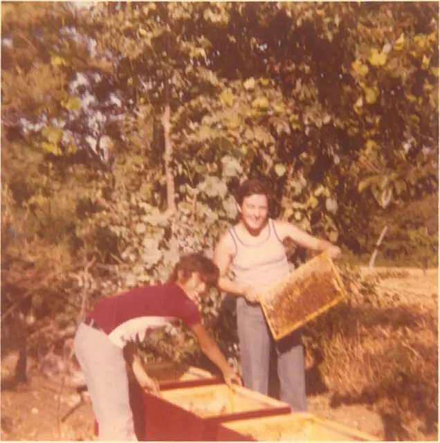
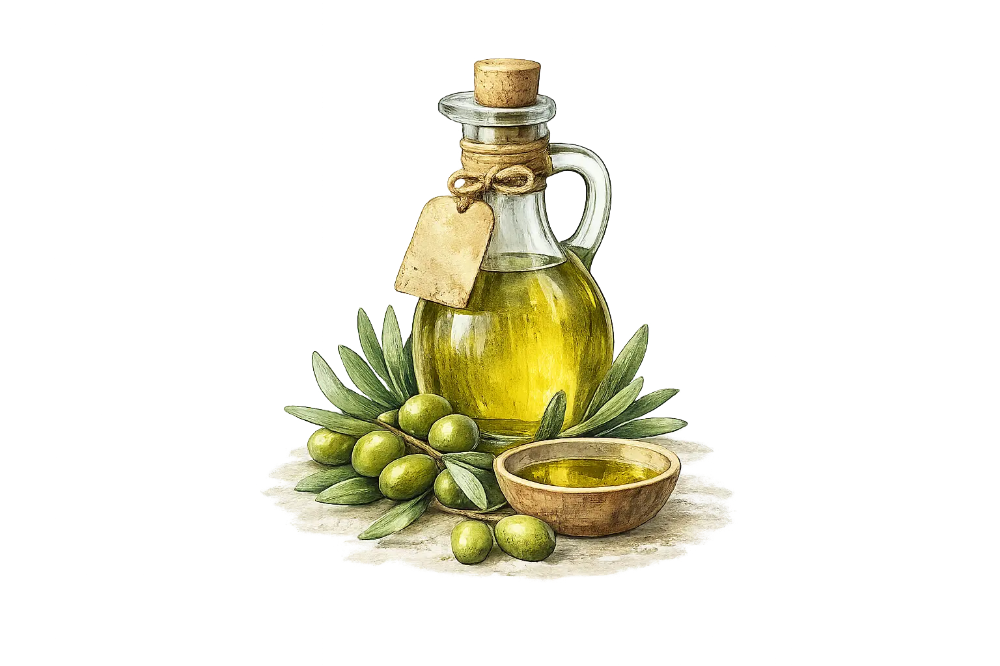
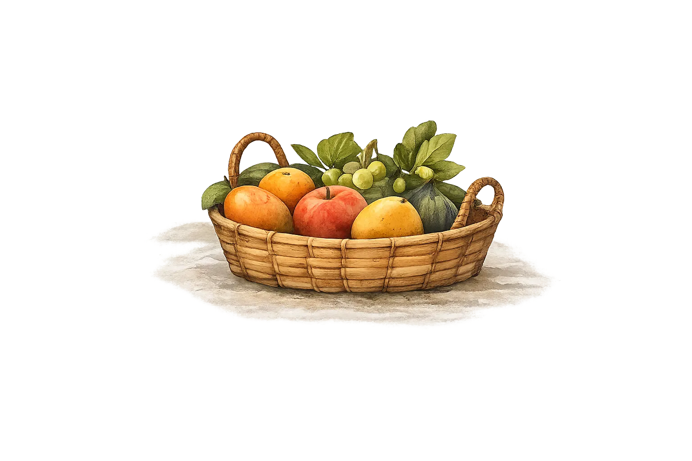
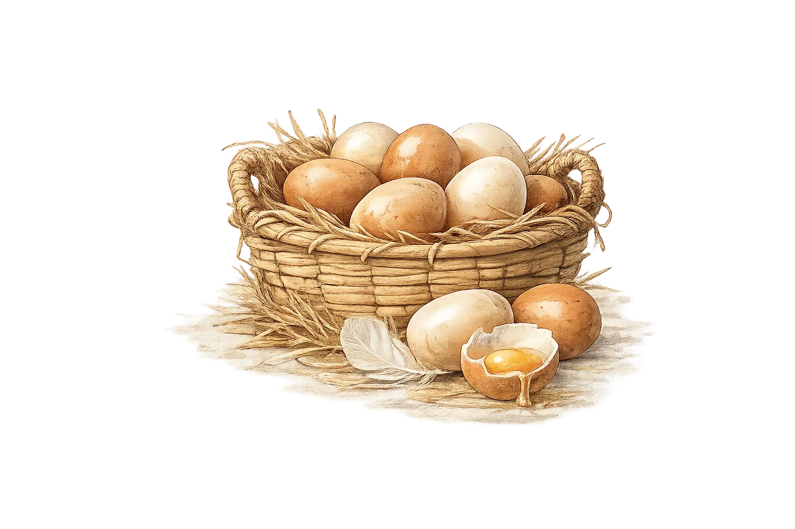
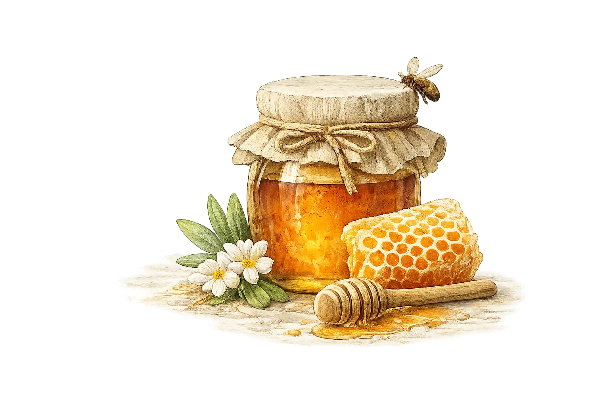

Tradizione rurale marchigiana dal 1900
Le nostre radici
Colline Bacchi nasce nel 2025 come evoluzione moderna di una storia familiare radicata nelle colline marchigiane da oltre 170 anni.
L’azienda, formalmente costituita nel post Covid, continua la tradizione agricola della famiglia Bacchi, presente sul territorio da fine ottocento. Generazioni di lavoro hanno costruito un legame profondo con la terra e con il ritmo naturale delle stagioni.
Oggi coltiviamo 10 ettari di proprietà esclusiva, scegliendo un’agricoltura biologica, artigianale e responsabile, in equilibrio tra passato e innovazione.

I nostri prodotti BIO

Olio Extravergine BIO
Le nostre olive provengono da piante in gran parte secolari, radicate nelle colline di Civitanova Marche Alta sin dai primi del Novecento.
Non pratichiamo coltivazioni intensive: gli uliveti crescono in modo naturale, rispettando i ritmi della terra e della biodiversità.
La fertilità del suolo è mantenuta esclusivamente attraverso metodi naturali, grazie al pascolo controllato di animali che contribuiscono in modo spontaneo e sostenibile all’equilibrio agronomico dei terreni.
Raccogliamo e trasformiamo le olive nel pieno rispetto della materia prima, preservando autenticità, qualità e identità territoriale.

Frutta e ortaggi BIO
Coltiviamo frutta e ortaggi secondo i cicli naturali della terra, privilegiando la biodiversità rispetto ai modelli di coltivazione intensiva.
I nostri frutteti non sono monocolture estese, ma ecosistemi armonici dove varietà diverse convivono per favorire l’equilibrio tra flora, fauna e suolo.
Non utilizziamo concimi chimici o fertilizzanti di sintesi. Proteggiamo le piante con tecniche tradizionali come la pacciamatura naturale e rigeneriamo il terreno attraverso letame equino.
Oltre agli ortaggi dell’orto, proponiamo prodotti spontanei e selvatici raccolti a mano, nel rispetto dell’ambiente e della stagionalità.

Uova BIO da galline ruspanti
Le nostre galline pascolano liberamente durante il giorno in spazi aperti e naturali,
mentre la notte trovano riparo sicuro in pollai in legno.
Un allevamento etico e rispettoso che garantisce uova genuine,
espressione di benessere animale e qualità biologica.

Miele biologico
Produciamo miele biologico attraverso un’apicoltura sostenibile e attenta,
contribuendo attivamente alla biodiversità delle colline marchigiane.
Le nostre api svolgono un ruolo fondamentale nell’equilibrio dell’ecosistema,
garantendo un prodotto naturale, autentico e legato al territorio.
Tradizione, innovazione ed etica guidano ogni nostra scelta.